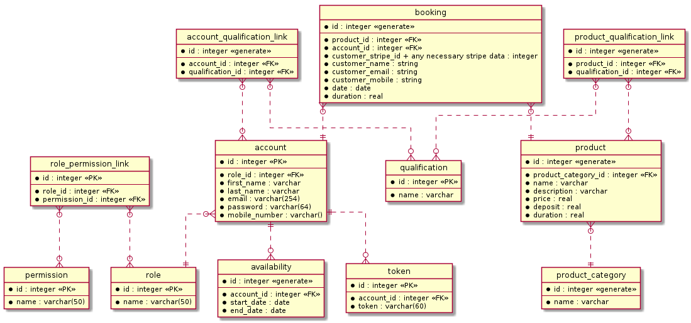

Database
Current entity relationship diagram

Summary
In the root of the repository there is a directory named uml/, which contains
a .uml file. This markdown is written in PlantUML and
it should describe the most up to date version of the database schema required
by the API.
There is also a .png file, which is the resultant output of processing the
.uml file. This image shows a visual representation of the database schema as
a comprehensive
entity relationship diagram
from this you will be able to see all of the tables which are created and used
by the API, and their relationship with other tables, as well as which fields
each table contains.
Modifying the ERD
In the event that you modify the existing schema of the database by implementing a new migration in the API, you must ensure the ERD is synchronised accordingly.
While the best place to look for advice on how to modify the .uml file to
achieve a desired result is the official PlantUML
documentation, the docs can oftentimes explain more than is necessary since the
markdown itself is very flexible. Our current implementation only takes
advantage of a couple of its features, and thus it is worthwhile briefly
explaining in this document how we are currently using it.
Each table is treated as an "entity", and is defined underneath the
** Entities ** comment in db-erd.uml, here is an example:
entity "account" as account {
*id : integer <<PK>>
--
*role_id : integer <<FK>>
*first_name : varchar
*last_name : varchar
*email : varchar(254)
*password : varchar(64)
*mobile_number : varchar()
}
This describes a table called account with a primary key (PK) called id, a
single foreign key (FK) called role_id, and some additional fields. Take note
of the fact each field is typed (e.g. varchar, integer, etc.), and labeled if
the field represents a primary or foreign key.
Underneath all of the entities, there is an ** Entity Relationships ** comment
which describes the relationship between each of the entities (e.g. one-to-many)
with another comment showing which characters represent different types of
relational symbology:
' Zero or One: |o..
' Exactly One: ||..
' Zero or Many: }o..
' One or Many: }|..
So to create a many-to-one relationship between two tables, let's call them
account and role, you would write:
account }o..|| role
With this information alone, you should be able to help maintain and contribute to the ERD.
How to generate a PNG from the UML
First, ensure you have docker installed on your machine. Included in the uml/
directory is a script called plantuml.sh, this script consumes one argument,
and it processes a .uml file into a .png file.
To do this, first change into the uml/ directory:
cd uml/
Then run the script and pass in the path to the file you would like to process:
./plantuml.sh db-erd.uml
You should expect to see a new .png file in the uml/ directory if there
wasn't one already.